matplotlib#
Matplotlib is the core plotting package in scientific python. There are others to explore as well (which we’ll chat about on slack).
Note
There are different interfaces for interacting with matplotlib, an interactive, function-driven (state machine) command-set and an object-oriented version. We’ll focus on the OO interface.
import numpy as np
import matplotlib.pyplot as plt
Matplotlib concepts#
Matplotlib was designed with the following goals (from mpl docs):
Plots should look great—publication quality (e.g. antialiased)
Postscript/PDF output for inclusion with TeX documents
Embeddable in a graphical user interface for application development
Code should be easy to understand it and extend
Making plots should be easy
Matplotlib is mostly for 2-d data, but there are some basic 3-d (surface) interfaces.
Volumetric data requires a different approach
Gallery#
Matplotlib has a great gallery on their webpage – find something there close to what you are trying to do and use it as a starting point:
Importing#
There are several different interfaces for matplotlib (see https://matplotlib.org/3.1.1/faq/index.html)
Basic ideas:
matplotlibis the entire packagematplotlib.pyplotis a module within matplotlib that provides easy access to the core plotting routinespylabcombines pyplot and numpy into a single namespace to give a MatLab like interface. You should avoid this—it might be removed in the future.
There are a number of modules that extend its behavior, e.g. basemap for plotting on a sphere, mplot3d for 3-d surfaces
Anatomy of a figure#
Figures are the highest level object and can include multiple axes

(figure from: http://matplotlib.org/faq/usage_faq.html#parts-of-a-figure )
Backends#
Interactive backends: pygtk, wxpython, tkinter, …
Hardcopy backends: PNG, PDF, PS, SVG, …
Basic plotting#
plot() is the most basic command. Here we also see that we can use LaTeX notation for the axes
fig, ax = plt.subplots()
ax.plot(x, y)
ax.set_xlabel(r"$x$")
ax.set_ylabel(r"$\cos(x)$")
ax.set_xlim(0, 2*np.pi)
---------------------------------------------------------------------------
NameError Traceback (most recent call last)
Cell In[2], line 3
1 fig, ax = plt.subplots()
----> 3 ax.plot(x, y)
4 ax.set_xlabel(r"$x$")
5 ax.set_ylabel(r"$\cos(x)$")
NameError: name 'x' is not defined
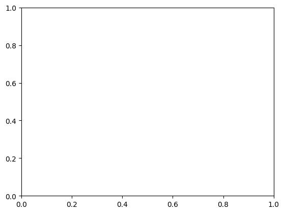
Quick Exercise
We can plot 2 lines on a plot simply by calling plot twice. Make a plot with both sin(x) and cos(x) drawn
we can use symbols instead of lines pretty easily too—and label them
fig, ax = plt.subplots()
ax.plot(x, np.sin(x), "o", label="sine")
ax.plot(x, np.cos(x), "x", label="cosine")
ax.set_xlim(0.0, 2.0*np.pi)
ax.legend()
---------------------------------------------------------------------------
NameError Traceback (most recent call last)
Cell In[3], line 3
1 fig, ax = plt.subplots()
----> 3 ax.plot(x, np.sin(x), "o", label="sine")
4 ax.plot(x, np.cos(x), "x", label="cosine")
5 ax.set_xlim(0.0, 2.0*np.pi)
NameError: name 'x' is not defined
Here we specified the format using a “format string” (see https://matplotlib.org/3.1.1/api/_as_gen/matplotlib.pyplot.plot.html)
This has the form '[marker][line][color]'
most functions take a number of optional named arguments too
ax.clear()
ax.plot(x, np.sin(x), linestyle="--", linewidth=3.0)
ax.plot(x, np.cos(x), linestyle="-")
fig
---------------------------------------------------------------------------
NameError Traceback (most recent call last)
Cell In[4], line 2
1 ax.clear()
----> 2 ax.plot(x, np.sin(x), linestyle="--", linewidth=3.0)
3 ax.plot(x, np.cos(x), linestyle="-")
4 fig
NameError: name 'x' is not defined
there is a command setp() that can also set the properties. We can get the list of settable properties as
There are predefined styles that can be used too. Generally you need to start from the figure creation for these to take effect
plt.style.available
['Solarize_Light2',
'_classic_test_patch',
'_mpl-gallery',
'_mpl-gallery-nogrid',
'bmh',
'classic',
'dark_background',
'fast',
'fivethirtyeight',
'ggplot',
'grayscale',
'seaborn-v0_8',
'seaborn-v0_8-bright',
'seaborn-v0_8-colorblind',
'seaborn-v0_8-dark',
'seaborn-v0_8-dark-palette',
'seaborn-v0_8-darkgrid',
'seaborn-v0_8-deep',
'seaborn-v0_8-muted',
'seaborn-v0_8-notebook',
'seaborn-v0_8-paper',
'seaborn-v0_8-pastel',
'seaborn-v0_8-poster',
'seaborn-v0_8-talk',
'seaborn-v0_8-ticks',
'seaborn-v0_8-white',
'seaborn-v0_8-whitegrid',
'tableau-colorblind10']
plt.style.use("fivethirtyeight")
fig = plt.figure()
ax = fig.add_subplot(111)
ax.plot(x, np.sin(x), linestyle="--", linewidth=3.0)
ax.plot(x, np.cos(x), linestyle="-")
ax.set_xlim(0.0, 2.0*np.pi)
---------------------------------------------------------------------------
NameError Traceback (most recent call last)
Cell In[6], line 5
3 fig = plt.figure()
4 ax = fig.add_subplot(111)
----> 5 ax.plot(x, np.sin(x), linestyle="--", linewidth=3.0)
6 ax.plot(x, np.cos(x), linestyle="-")
7 ax.set_xlim(0.0, 2.0*np.pi)
NameError: name 'x' is not defined
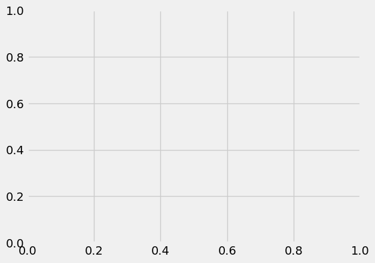
plt.style.use("default")
Multiple axes#
There are a wide range of methods for putting multiple axes on a grid. We’ll look at the simplest method.
The add_subplot() method we’ve been using can take 3 numbers: the number of rows, number of columns, and current index
fig = plt.figure()
ax1 = fig.add_subplot(211)
x = np.linspace(0,5,100)
ax1.plot(x, x**3 - 4*x)
ax1.set_xlabel("x")
ax1.set_ylabel(r"$x^3 - 4x$", fontsize="large")
ax2 = fig.add_subplot(212)
ax2.plot(x, np.exp(-x**2))
ax2.set_xlabel("x")
ax2.set_ylabel("Gaussian")
# log scale
ax2.set_yscale("log")
# set the figure size
fig.set_size_inches(6, 8)
# tight_layout() makes sure things don't overlap
fig.tight_layout()
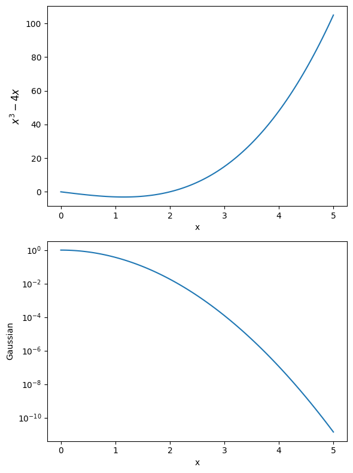
Visualizing 2-d array data#
2-d datasets consist of (x, y) pairs and a value associated with that point. Here we create a 2-d Gaussian, using the meshgrid() function to define a rectangular set of points.
def g(x, y):
return np.exp(-((x-0.5)**2)/0.1**2 - ((y-0.5)**2)/0.2**2)
N = 100
x = np.linspace(0.0, 1.0, N)
y = x.copy()
xv, yv = np.meshgrid(x, y)
A “heatmap” style plot assigns colors to the data values. A lot of work has gone into the latest matplotlib to define a colormap that works good for colorblindness and black-white printing.
fig, ax = plt.subplots()
im = ax.imshow(g(xv, yv), origin="lower")
fig.colorbar(im, ax=ax)
<matplotlib.colorbar.Colorbar at 0x7f2140ada890>
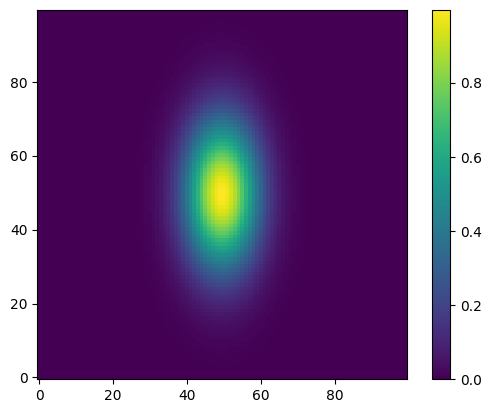
Sometimes we want to show just contour lines—like on a topographic map. The contour() function does this for us.
fig, ax = plt.subplots()
contours = ax.contour(g(xv, yv))
ax.axis("equal") # this adjusts the size of image to make x and y lengths equal
(0.0, 99.0, 0.0, 99.0)
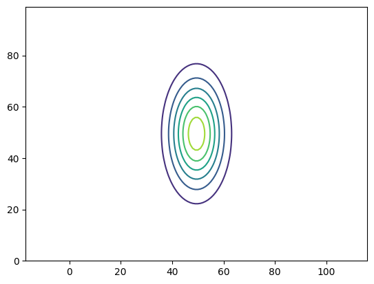
Quick Exercise
Contour plots can label the contours, using the ax.clabel() function.
Try adding labels to this contour plot.
Error bars#
For experiments, we often have errors associated with the \(y\) values. Here we create some data and add some noise to it, then plot it with errors.
def y_experiment(a1, a2, sigma, x):
""" return the experimental data in a linear + random fashion a1
is the intercept, a2 is the slope, and sigma is the error """
N = len(x)
# randn gives samples from the "standard normal" distribution
r = np.random.randn(N)
y = a1 + a2*x + sigma*r
return y
N = 40
x = np.linspace(0.0, 100.0, N)
sigma = 25.0*np.ones(N)
y = y_experiment(10.0, 3.0, sigma, x)
fig, ax = plt.subplots()
ax.errorbar(x, y, yerr=sigma, fmt="o")
<ErrorbarContainer object of 3 artists>
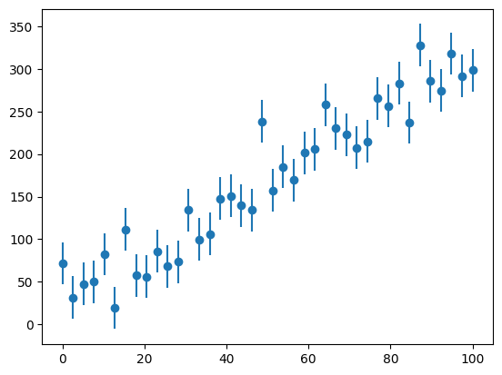
Annotations#
adding text and annotations is easy
xx = np.linspace(0, 2.0*np.pi, 1000)
fig, ax = plt.subplots()
ax.plot(xx, np.sin(xx))
ax.text(np.pi/2, np.sin(np.pi/2), r"maximum")
Text(1.5707963267948966, 1.0, 'maximum')
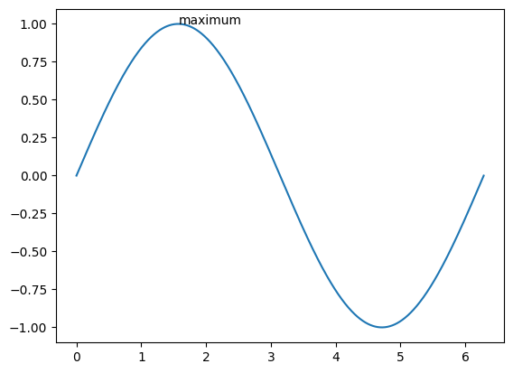
we can also turn off the top and right “splines”
ax.spines['right'].set_visible(False)
ax.spines['top'].set_visible(False)
ax.xaxis.set_ticks_position('bottom')
ax.yaxis.set_ticks_position('left')
fig
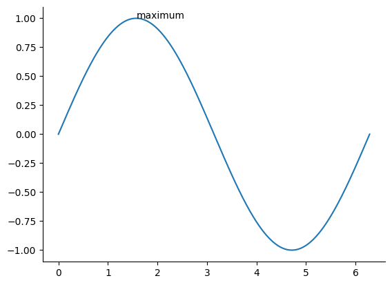
Annotations with an arrow are also possible
#example from http://matplotlib.org/examples/pylab_examples/annotation_demo.html
fig = plt.figure()
ax = fig.add_subplot(111, projection='polar')
r = np.arange(0, 1, 0.001)
theta = 2*2*np.pi*r
line, = ax.plot(theta, r, color='#ee8d18', lw=3)
ind = 800
thisr, thistheta = r[ind], theta[ind]
ax.plot([thistheta], [thisr], 'o')
ax.annotate('a polar annotation',
xy=(thistheta, thisr), # theta, radius
xytext=(0.05, 0.05), # fraction, fraction
textcoords='figure fraction',
arrowprops=dict(facecolor='black', shrink=0.05),
horizontalalignment='left',
verticalalignment='bottom',
)
Text(0.05, 0.05, 'a polar annotation')
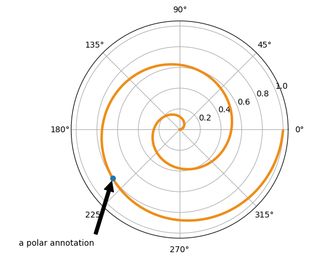
Surface plots#
matplotlib can’t deal with true 3-d data (i.e., x,y,z + a value), but it can plot 2-d surfaces and lines in 3-d.
from mpl_toolkits.mplot3d import Axes3D
fig = plt.figure()
ax = plt.axes(projection="3d")
# parametric curves
N = 100
theta = np.linspace(-4*np.pi, 4*np.pi, N)
z = np.linspace(-2, 2, N)
r = z**2 + 1
x = r*np.sin(theta)
y = r*np.cos(theta)
ax.plot(x,y,z)
[<mpl_toolkits.mplot3d.art3d.Line3D at 0x7f2160031050>]
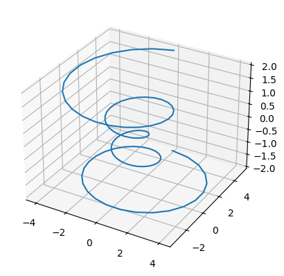
fig = plt.figure()
ax = plt.axes(projection="3d")
X = np.arange(-5,5, 0.25)
Y = np.arange(-5,5, 0.25)
X, Y = np.meshgrid(X, Y)
R = np.sqrt(X**2 + Y**2)
Z = np.sin(R)
surf = ax.plot_surface(X, Y, Z, rstride=1, cstride=1, cmap="coolwarm")
# and the view (note: most interactive backends will allow you to rotate this freely)
ax.azim = 90
ax.elev = 40
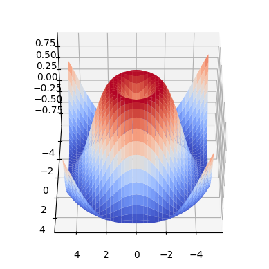
Plotting on a sphere#
the map functionality expects stuff in longitude and latitude, so if you want to plot x,y,z on the surface of a sphere using the idea of spherical coordinates, remember that the spherical angle from z (theta) is co-latitude
note: you need the python-basemap package installed for this to work
This also illustrates getting access to a matplotlib toolkit
def to_lonlat(x, y, z):
SMALL = 1.e-100
rho = np.sqrt((x + SMALL)**2 + (y + SMALL)**2)
R = np.sqrt(rho**2 + (z + SMALL)**2)
theta = np.degrees(np.arctan2(rho, z + SMALL))
phi = np.degrees(np.arctan2(y + SMALL, x + SMALL))
# latitude is 90 - the spherical theta
return (phi, 90-theta)
from mpl_toolkits.basemap import Basemap
# other projections are allowed, e.g. "ortho", moll"
map = Basemap(projection='moll', lat_0 = 45, lon_0 = 45,
resolution = 'l', area_thresh = 1000.)
map.drawmapboundary()
map.drawmeridians(np.arange(0, 360, 15), color="0.5", latmax=90)
map.drawparallels(np.arange(-90, 90, 15), color="0.5", latmax=90) #, labels=[1,0,0,1])
# unit vectors (+x, +y, +z)
points = [(1,0,0), (0,1,0), (0,0,1)]
labels = ["+x", "+y", "+z"]
for i in range(len(points)):
p = points[i]
print(p)
lon, lat = to_lonlat(p[0], p[1], p[2])
xp, yp = map(lon, lat)
s = plt.text(xp, yp, labels[i], color="b", zorder=10)
# draw a great circle arc between two points
lats = [0, 0]
lons = [0, 90]
map.drawgreatcircle(lons[0], lats[0], lons[1], lats[1], linewidth=2, color="r")
(1, 0, 0)
(0, 1, 0)
(0, 0, 1)
[<matplotlib.lines.Line2D at 0x7f214001ae10>]
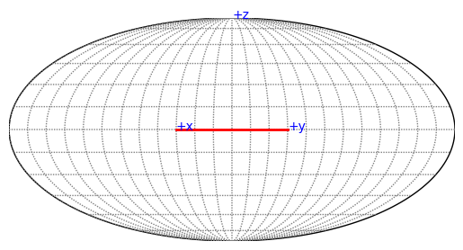
also, if you really are interested in earth…
map = Basemap(projection='ortho', lat_0 = 45, lon_0 = 45,
resolution = 'l', area_thresh = 1000.)
map.drawcoastlines()
map.drawmapboundary()
<matplotlib.patches.Ellipse at 0x7f2137f2a110>
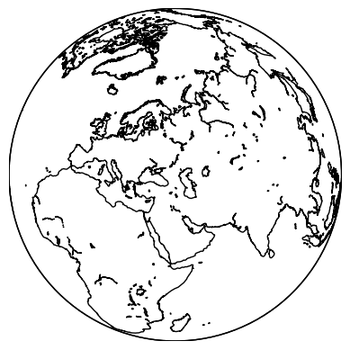
Histograms#
here we generate a bunch of gaussian-normalized random numbers and make a histogram. The probability distribution should match $\(y(x) = \frac{1}{\sigma \sqrt{2\pi}} e^{-x^2/(2\sigma^2)}\)$
N = 10000
r = np.random.randn(N)
fig, ax = plt.subplots()
ax.hist(r, density=True, bins=20)
x = np.linspace(-5,5,200)
sigma = 1.0
ax.plot(x, np.exp(-x**2/(2*sigma**2)) / (sigma*np.sqrt(2.0*np.pi)),
c="r", lw=2)
ax.set_xlabel("x")
Text(0.5, 0, 'x')
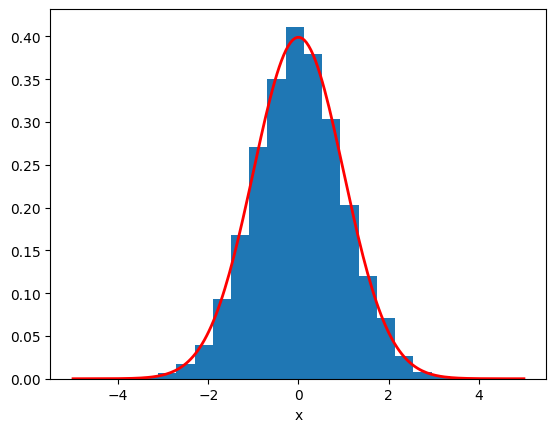
Plotting data from a file#
numpy.loadtxt() provides an easy way to read columns of data from an ASCII file
data = np.loadtxt("test1.exact.128.out")
print(data.shape)
(128, 8)
fig, ax = plt.subplots()
ax.plot(data[:,1], data[:,2]/np.max(data[:,2]), label=r"$\rho$")
ax.plot(data[:,1], data[:,3]/np.max(data[:,3]), label=r"$u$")
ax.plot(data[:,1], data[:,4]/np.max(data[:,4]), label=r"$p$")
ax.plot(data[:,1], data[:,5]/np.max(data[:,5]), label=r"$T$")
ax.set_ylim(0,1.1)
ax.legend(frameon=False, fontsize=12)
<matplotlib.legend.Legend at 0x7f211f01a3d0>
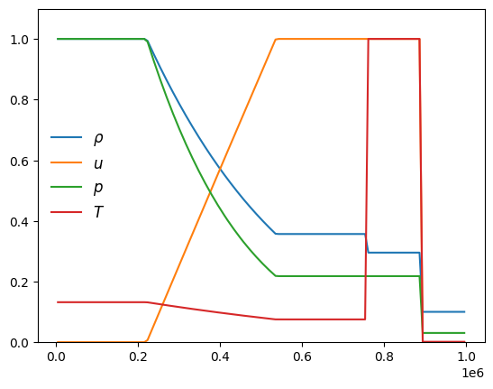
Final fun#
if you want to make things look hand-drawn in the style of xkcd, rerun these examples after doing plt.xkcd()
plt.xkcd()
<contextlib.ExitStack at 0x7f2137f392d0>